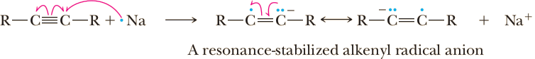
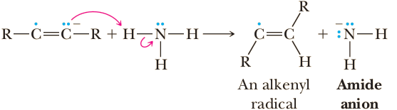
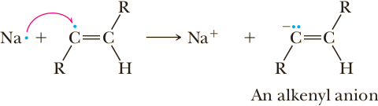
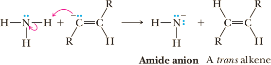

Reduction of Alkynes
Catalytic Reduction
Treatment of an alkyne with H2 in the presence of a transition metal catalyst, most commonly palladium, platinum, or nickel, results in the addition of 2 moles of H2 to the alkyne and its conversion to an alkane. Catalytic reduction of an alkyne can be brought about at or slightly above room temperature and with moderate pressures of hydrogen gas.
| CH3C≡CCH3 | + | 2H2 | Pd, Pt, or Ni ⟶ 3 atm | CH3CH2CH2CH3 |
Reduction of an alkyne occurs in two stages: first addition of 1 mole of H2 to form an alkene and then addition of the second mole to the alkene to form the alkane. In most cases, it is not possible to stop the reaction at the alkene stage.
However, by careful choice of catalyst, it is possible to stop the reduction after the addition of 1 mole of hydrogen. The catalyst most commonly used for this purpose consists of fi nely powdered palladium metal deposited on solid calcium carbonate that has been specially modified with lead salts. This combination is known as the Lindlar catalyst. Reduction (hydrogenation) of alkynes over a Lindlar catalyst is stereoselective; syn addition of two hydrogen atoms to the carbon-carbon triple bond gives a cis alkene.
| CH3C≡CCH3 | + | 2H2 | Lindlar catalyst ⟶ |  |
Because addition of hydrogen in the presence of the Lindlar catalyst is stereoselective for syn addition, it has been proposed that reduction proceeds by simultaneous or nearly simultaneous transfer of two hydrogen atoms from the surface of the metal catalyst to the alkyne. We presented a similar mechanism for the catalytic reduction of an alkene to an alkane.
Hydroboration-Protonolysis
As we have just seen in Section 7.7A, internal alkynes react with borane to give a trialkenylborane. Treating a trialkenylborane with a carboxylic acid, such as acetic acid, results in stereoselective replacement of boron by hydrogen: a cis alkenyl group bonded to a boron is converted to a cis alkene.
 | + | 3 CH3COOH | ⟶ | + | CH3COOB |
The net effect of hydroboration of an internal alkyne followed by treatment with acetic acid is reduction of the alkyne to a cis alkene. Thus, hydroboration- protonolysis and catalytic reduction over a Lindlar catalyst provide alternative schemes for conversion of an alkyne to a cis alkene.
Dissolving-Metal Reduction
Alkynes can also be reduced to alkenes by using either sodium or lithium metal in liquid ammonia or in low-molecular-weight primary or secondary amines. The alkali metal is the reducing agent and, in the process, is oxidized to M+, which dissolves as a metal salt in the solvent for the reaction. Reduction of an alkyne to an alkene by lithium or sodium in liquid ammonia, NH3 (l ), is stereoselective; it involves mainly anti addition of two hydrogen atoms to the triple bond.
| + | 2Na ⟶ NH3(l) | |
Thus, by the proper choice of reagents and reaction conditions, it is possible to reduce an alkyne to either a cis alkene (by catalytic reduction or hydroboration-protonolysis) or to a trans alkene (by dissolving-metal reduction). The stereoselectivity of alkali metal reduction of alkynes to alkenes can be accounted for by the following mechanism. As you study this mechanism, note that it involves two one-electron reductions and two proton-transfer reactions. The stereochemistry of the alkene is determined in Step 3. Adding the four steps and canceling species that appear on both sides of the equation gives the overall equation for the reaction.
Mechanism Reduction of an Alkyne by Sodium in Liquid Ammonia
Step 1: A one-electron reduction of the alkyne gives an alkenyl radical anion; that is, an ion containing an unpaired electron on one carbon and a negative charge on an adjacent carbon (note that we use a single-headed arrow to show the repositioning of single electrons).
Step 2: Add a proton The alkenyl radical anion (a very strong base) abstracts a proton from a molecule of ammonia (under these conditions, a weak acid) to give an alkenyl radical.
Step 3: A one-electron reduction of the alkenyl radical gives an alkenyl anion. The trans alkenyl anion is more stable than its cis isomer, and the stereochemistry of the fi nal product is determined in this step.
Step 4: Add a proton A second proton-transfer reaction completes the reduction and gives the trans alkene.
